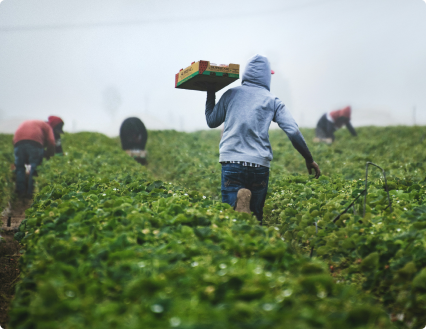

Raízes d' Guará
Raízes d’ Guará nasceu como ideia para um projeto integrador do curso de Front-end oferecido pela Proz Tech. O grupo foi composto pelos desenvolvedores Anderson, Gabrielly, Leide e Rayssa. O objetivo inicial do projeto é proporcionar acesso a frutas e verduras orgânicas para a população de baixa renda, conectando os produtores com a comunidade.
